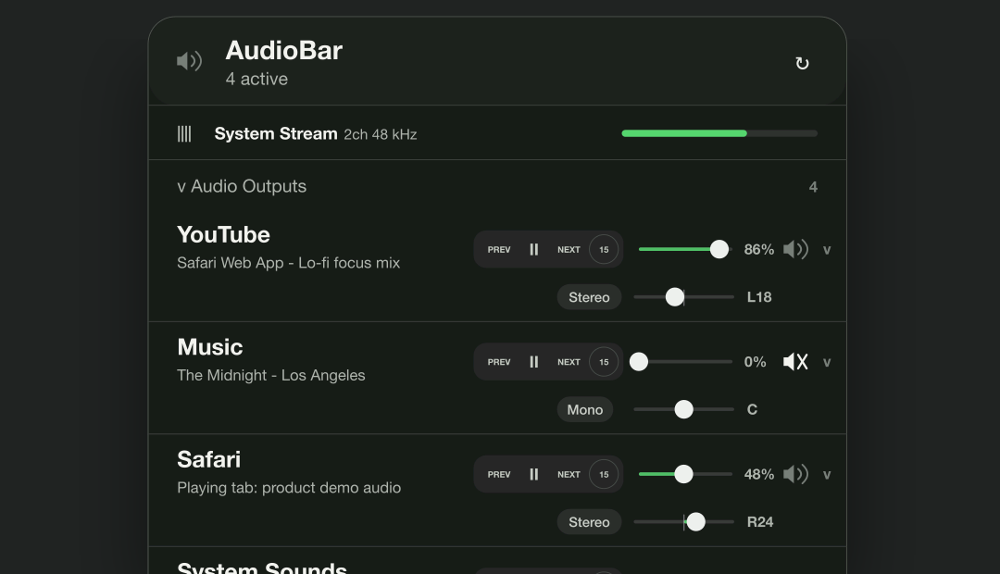
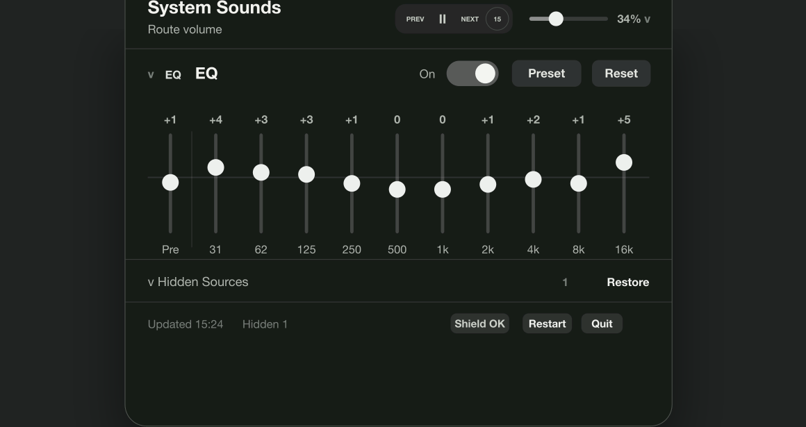
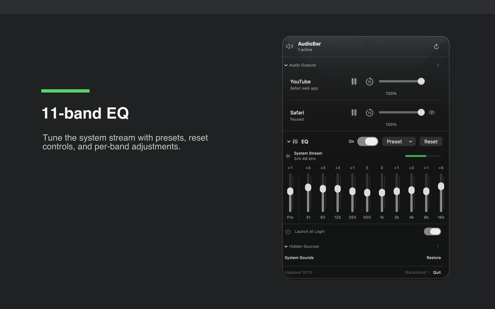

The channel mixer macOS forgot
AudioBar
Control app volume, web audio, and system sound from your menu bar. AudioBar gives macOS a per-app volume mixer for Music, Spotify, Safari, and web app audio, then adds a compact 11-band EQ for shaping routed system sound.
YouTubeChannel volume
MusicChannel volume
EQ Route11-band system tune
What It Does
- Adds a practical macOS per-app volume mixer, so one loud app does not force you to change the whole Mac volume.
- Controls supported audio sources such as Music, Spotify, Safari, and Safari Web App media with direct source volume sliders.
- Shows active CoreAudio output sources for app audio monitoring and lets you hide rows you do not want to manage.
- Applies a compact 11-band system audio EQ to routed Mac sound on supported macOS versions.
- Works as a focused menu bar audio control panel for source volume, playback controls, hidden sources, and EQ presets.
How It Looks



Install Notes
- Requires macOS 14.2 or newer.
- When the notarized zip is available, download it, unzip it, and move
AudioBar.appto/Applications. - macOS may ask for system audio capture, Automation, or Accessibility permission depending on which controls you use.